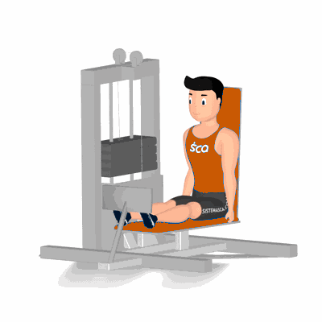

Foot Press

Exercício para fortalecimento e hipertrofia dos da panturrilha, com enfoque aos músculos Gastrocnêmio.
Ficha Técnica
Tipo: Musculação
Grupo Muscular: Perna
Aparelho: Nenhum
Músculos: Nenhum
Como realizar
- Sente no aparelho com as pernas estendidas;
- Posicione as pontas dos pés no suporte, manter os calcanhares para fora da plataforma;
- Costas e glúteos bem apoiados, utilize as mãos para agarrar o pegador;
- Utilize a força dos músculos das panturrilhas e empurre a plataforma o máximo que conseguir, com as pontas dos pés para frente;
- Manter a contração muscular por um instante, retorne lentamente à posição inicial;
- Repita os movimentos, conforme o número de repetições orientado pelo professor.
 RC STORE
RC STORE